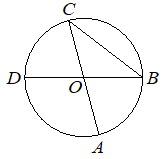

Авторский разбор и аудит предварительны; внешней экспертизы нет.
Модель автора: claude-opus-5-5 (opus; effort=low); в основных частотах: True ·
Впишите правильный ответ.
| Отрезки и диаметры окружности |  |
КЭС: 7.1 Фигуры на плоскости
33
| ID / вход | Действие | Результат | Локальные KC |
|---|---|---|---|
| s1 · condition | Найти центральный угол AOB как смежный с углом AOD, так как BD — диаметр (D, O, B на одной прямой): 180° − 114°. | ∠AOB = 66° | kc1 |
| s2 · condition, s1 | Найти вписанный угол ACB, опирающийся на ту же дугу AB, что и центральный угол AOB, как половину центрального. | ∠ACB = 33° | kc2 |
[
{
"id": "m1",
"name": "Переход от данного центрального угла к смежному центральному и затем к вписанному углу на той же дуге",
"step_ids": [
"s1",
"s2"
]
}
]Вход: угол между лучами, один из которых лежит на прямой (диаметре) вместе с противоположным лучом. Операция: вычесть данный угол из 180°. Граница: применимо, когда стороны образуют развёрнутый угол.
{
"local_kc_id": "kc1",
"status": "match",
"catalog_kc_id": "literal_f5a787e19d0e",
"evidence": [
{
"ref": "step:s1:action",
"quote": "Найти центральный угол AOB как смежный с углом AOD, так как BD — диаметр (D, O, B на одной прямой): 180° − 114°."
},
{
"ref": "image:assets/be60391c6b1031341f79e1e0.png",
"region_description": "Горизонтальный диаметр DB через центр O; луч OA вниз-вправо, углы AOD и AOB образуют развёрнутый угол DOB"
}
],
"context_refs": [
"condition",
"image:assets/be60391c6b1031341f79e1e0.png"
],
"alternatives_checked": [
{
"catalog_kc_id": "literal_adbf18f11761",
"reason": "Сложение/вычитание углов с общей стороной в общем виде; смежность с развёрнутым углом точнее описана в literal_f5a787e19d0e"
}
],
"rationale": "Операция — нахождение угла как смежного (180° минус данный) при известном положении лучей на прямой DB; определение узла явно включает смежность при известных положениях лучей. Часть узла про сумму углов треугольника здесь не используется, но узел сформулирован как использование этих фактов, а не их обязательная совокупность.",
"proposal": null,
"blocking": false,
"issue_ids": []
}Вход: центральный угол окружности и вписанный угол, опирающийся на ту же дугу. Операция: вписанный угол равен половине центрального. Граница: углы должны опираться на одну и ту же дугу.
{
"local_kc_id": "kc2",
"status": "new_candidate",
"catalog_kc_id": null,
"evidence": [
{
"ref": "step:s2:action",
"quote": "Найти вписанный угол ACB, опирающийся на ту же дугу AB, что и центральный угол AOB, как половину центрального."
},
{
"ref": "step:s2:result",
"quote": "∠ACB = 33°"
}
],
"context_refs": [
"step:s1:result",
"image:assets/be60391c6b1031341f79e1e0.png"
],
"alternatives_checked": [
{
"catalog_kc_id": "diameter_angle",
"reason": "Только частный случай вписанного угла, опирающегося на диаметр (90°); здесь дуга AB не полуокружность"
},
{
"catalog_kc_id": "isosceles_angles",
"reason": "Можно было бы решить через равнобедренный треугольник OCB, но автор этого не делает"
}
],
"rationale": "Применяется теорема о вписанном угле: вписанный угол равен половине центрального, опирающегося на ту же дугу. В каталоге такого общего узла нет.",
"proposal": {
"name": "Находить вписанный угол по центральному на той же дуге",
"definition": "Установить, что вписанный и центральный углы опираются на одну и ту же дугу (вершина вписанного угла не лежит на этой дуге), и взять половину центрального угла."
},
"blocking": false,
"issue_ids": []
}[]
[]
{
"author_path": "data/annotation/runs/2026-11-07-fipi-team-bogdan108-051-150/raw/author/AD5F64.json",
"auditor_path": "data/annotation/runs/2026-11-07-fipi-team-bogdan108-051-150/raw/auditor/AD5F64.json",
"accepted_after_review": null
}